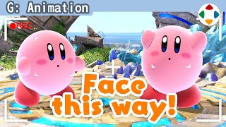
速览
林克彼此面对面：一个朝着我们露肚子，一个背对；马力欧彼此面对面：两个都露肚子。这就是翻转动作：把姿势和动作做镜像对称的技术。没找到像样的正式名称，他的开发中这样叫，是游戏特有的奇特规格。《街头霸王 2》角色是精灵即点阵图，所以使用左右反转的图；《街头霸王 4》用多边形构成，也遵循 2 代左右反转。这相当费事：不必逐个改动作，但让各种管理变麻烦：右直拳会变成左直拳，道具的持手要迅速调换；左右不对称的斗士难以适用，所以拿剑之类的人不用。为什么这么做？当然是因为好看。到《大乱斗 X》左右都没有；普通做法右边的人会背对镜头，表情看不到、信息量低，难得的话朝正面更好。《大乱斗》是横看的游戏，各处会有些怪：例如卡比跑步，从中线方向看是斜着跑的；但普通看时能看到脸，信息量完整。过去作品没有翻转动作，跑步等只能做成正侧面——从正侧面看怎么都不太有趣，动作有一半会看不见脸。题外话：《街霸 2》的 DJ 穿着写着 MAXIMUM 的裤子，因为这组字母左右反转也没问题，下了功夫。其实偶然的是，卡比的马克西姆番茄也因为能左右镜像一下做出来，所以是带 M 的设计。
1. 什么是翻转动作 0:03
林克彼此面对面：一个朝我们露肚子，一个背对。马力欧彼此面对面：两个都露肚子。
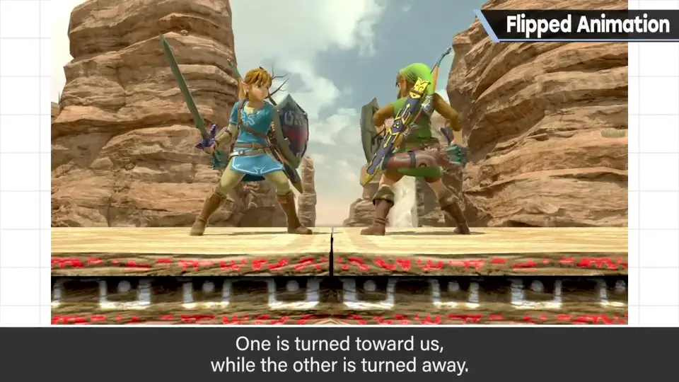
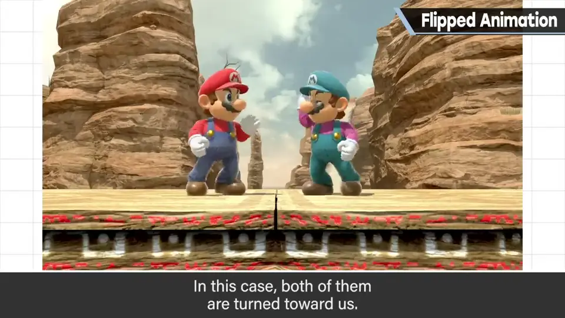
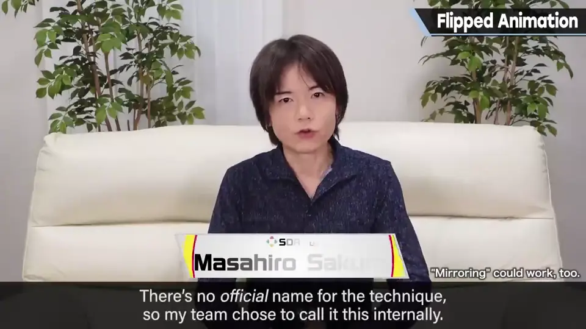
没找到像样的正式名称，他的开发中这样叫。是游戏特有的奇特规格。
2. 格斗游戏的先例 0:30
《街头霸王 2》角色是精灵（点阵图），所以使用左右反转的图。
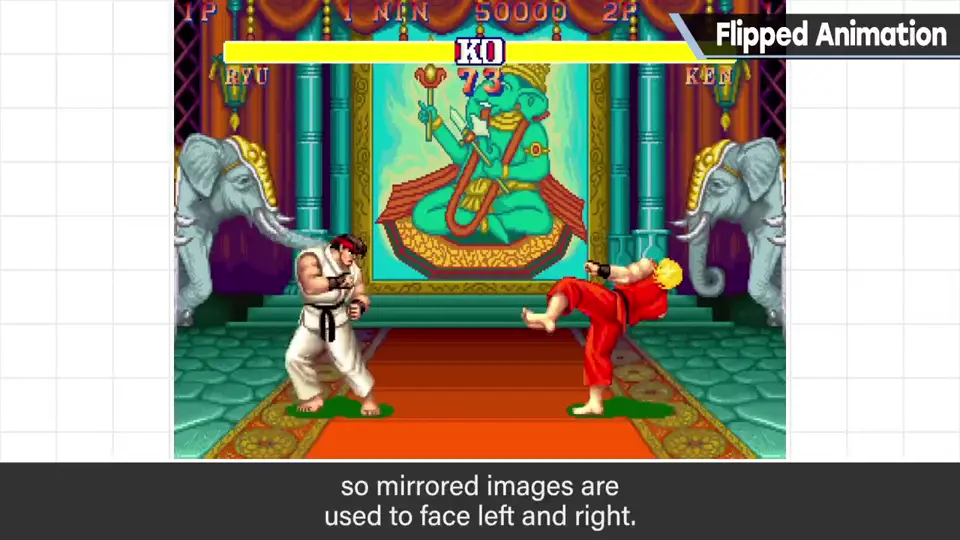
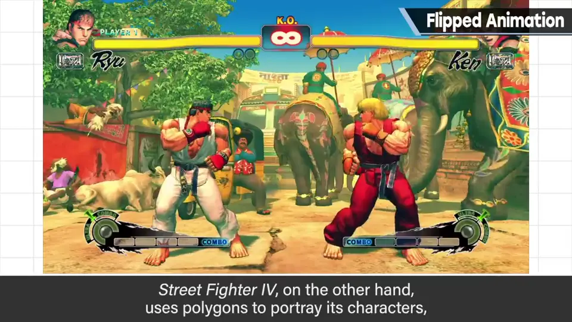
《街头霸王 4》用多边形构成，也遵循 2 代做了左右反转。
3. 代价 0:55
这相当费事：不必逐个改动作，但让各种管理变麻烦。
- 右直拳会变成左直拳。
- 道具的持手要迅速调换。
- 左右不对称的斗士难以适用，所以拿剑之类的人不用。
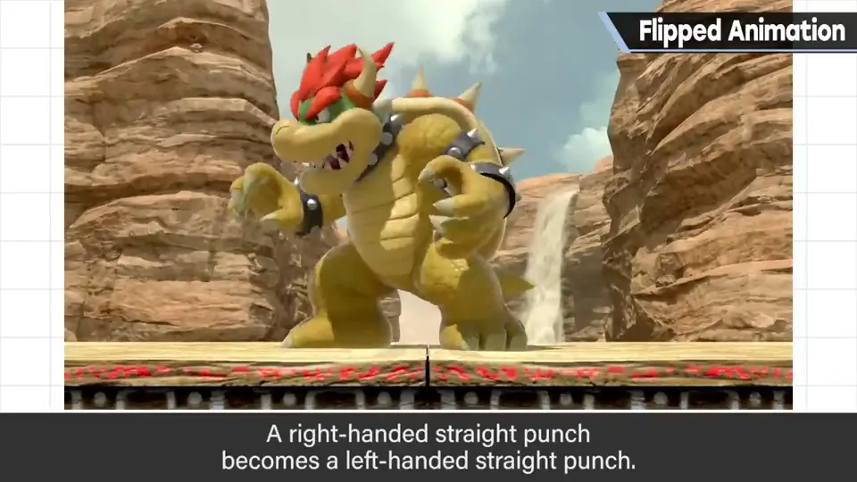
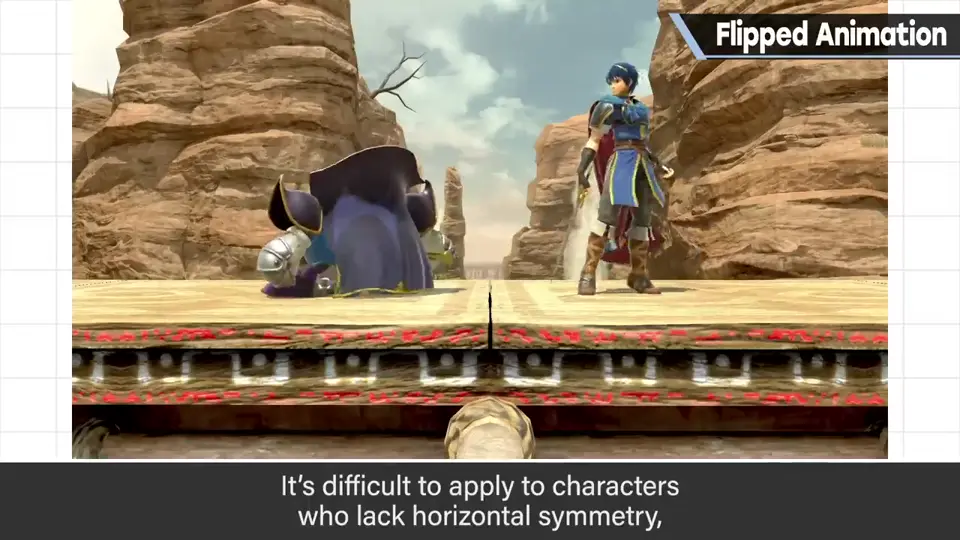
4. 为什么要做 1:17
到《大乱斗 X》为止都没有。普通做法右边的人会背对镜头：表情看不见、信息量低。难得的话，朝正面更好。
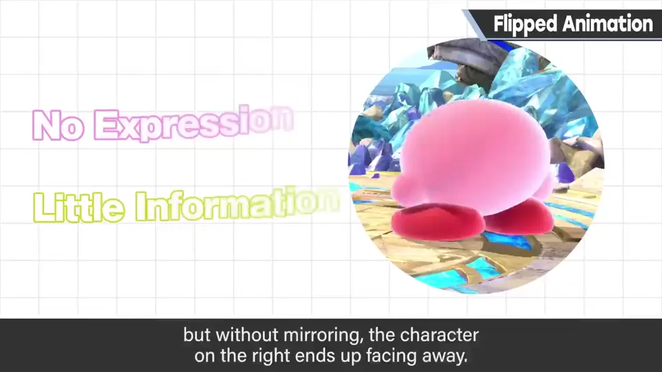
5. 横看游戏的取舍 1:36
《大乱斗》是横看的游戏，各处会有些怪：例如卡比跑步，从中线方向看是斜着跑的。
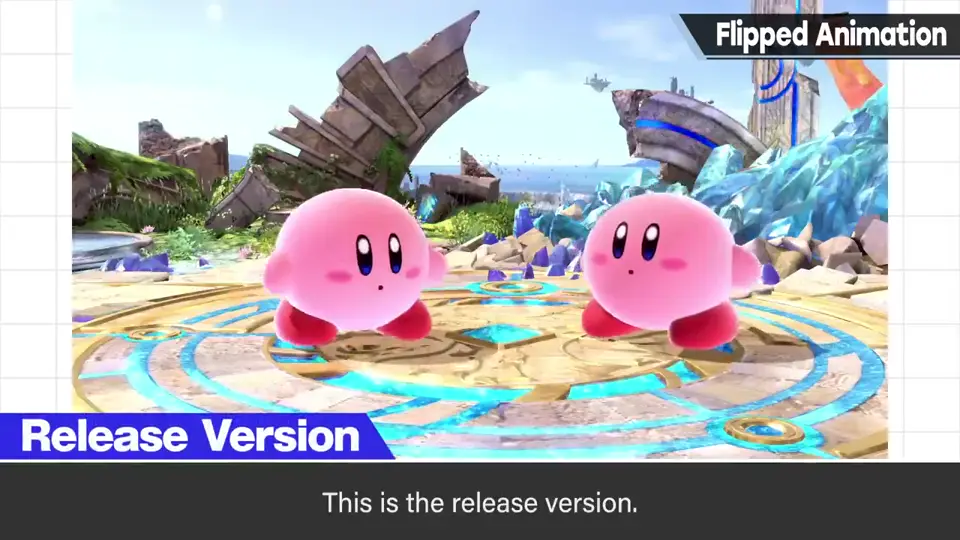
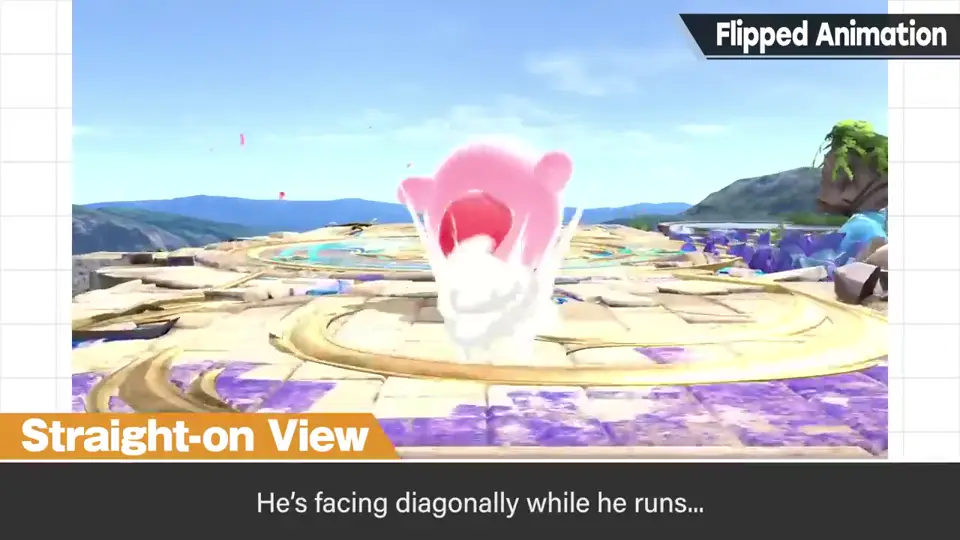
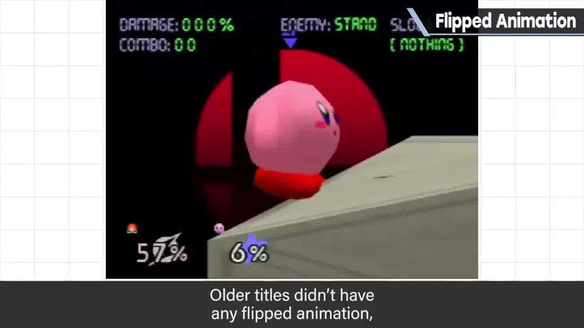
但普通看时能看到脸，信息量完整。过去作品没有翻转动作，跑步等只能做成正侧面——正侧面看怎么都不太有趣，动作有一半看不见脸。
6. 题外话：MAXIMUM 2:14
《街霸 2》的 DJ 穿着写有 MAXIMUM 的裤子：这组字母左右反转也没问题，下了功夫。
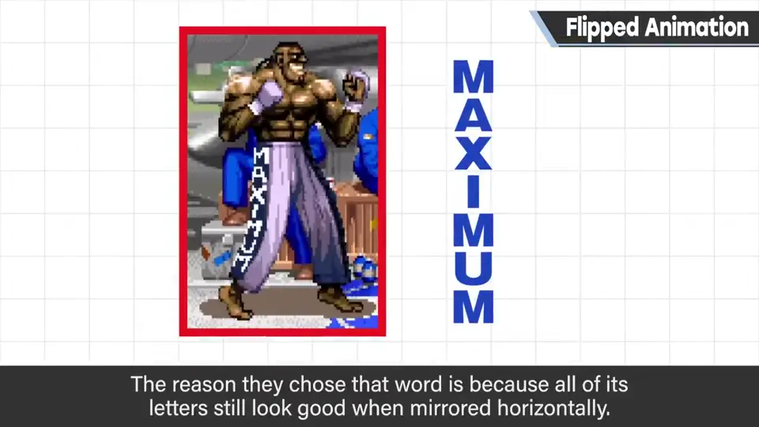
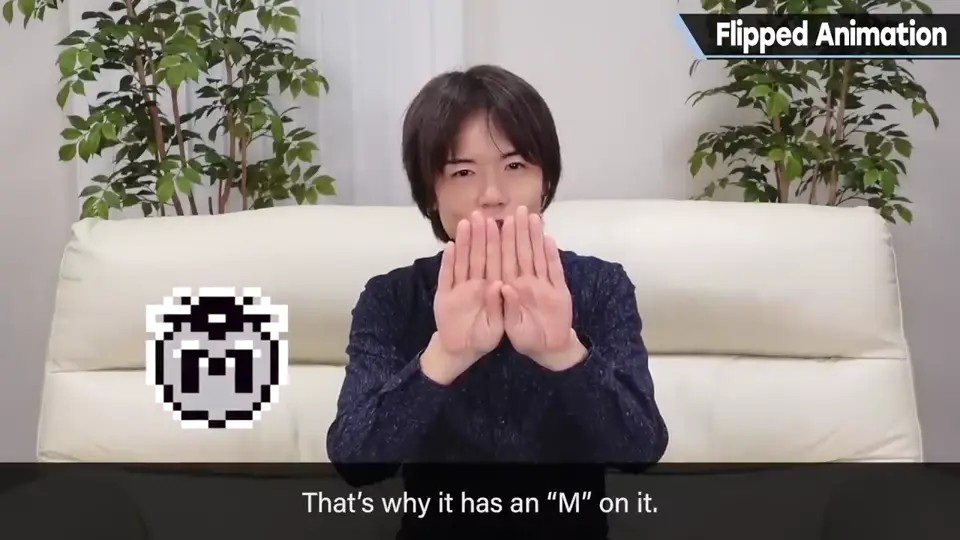
其实偶然的是，卡比的马克西姆番茄也是因为能左右镜像一下做出来，所以是带 M 的设计。
自测题
1. 什么是翻转动作？
把姿势和动作做镜像，让左右两侧的角色都朝向镜头。 0:20
2. 翻转动作有什么代价？
管理麻烦：右拳变左拳、道具换手，左右不对称（持剑）角色不适用。 1:00
3. 为什么 DJ 裤子写 MAXIMUM？
这组字母左右反转也成立。 2:30